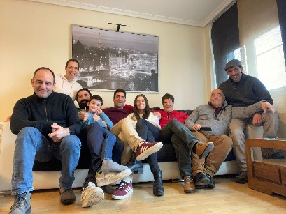

Fue necesario recorrer más del 40% de la circunferencia
terrestre para esta foto.
Por ello, aunque pueda parecer extraño,
no es la foto en si lo valioso, sino la historia que
cuenta y la que contará.
Los números:
- 44 días - 1056 horas
- 9 ciudades:
Madrid, Barcelona, Collado, El escorial, Avila, Segovia, Cercena, Torrelodones, Nevaserrada
- 6 aeropuertos, 2 estaciones de colectivo y 4 de metro
- +16.000 km en recorridos.
- Un acueducto, un monasterios, dos castillos y dos catedrales.
"Cuando uno se encuentra a sí mismo, la felicidad es una consecuencia."
P.D.: Amplio el concepto de mediodía que manejan aca eh 🤣🤣🤣